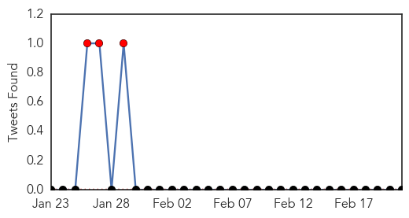
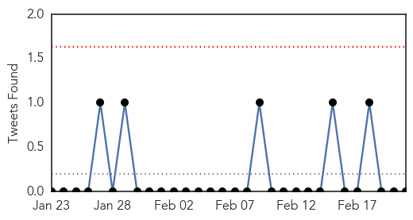

Measles
30-Day Web Trend
14 alerts, 12 warnings

30-Day Twitter Trend
3 alerts, 0 warnings

Article Locations
Article Confidences

Top Articles:
- 0.984
- Measles reported in Copenhagen: Nearly 200 may have been exposed
- 0.963
- No End In Sight for Measles Outbreak Which Remains Largely Uncontrolled
- 0.958
- Measles outbreak at 149 cases in eight states, Canada and Mexico
- 0.955
- Measles cases continue to appear nationwide
- 0.934
- More measles cases tied to Disneyland, Illinois day care Republican American
- 0.919
- Health Officials Release Lists Of Potential Measles Exposure Sites
- 0.843
- All Washoe Measles Lab Tests Are Negative
- 0.841
- Dana Hills High School
- 0.832
- A public health necessity
- 0.754
- Health district confirms 6th case of measles in Southern Nevada
- 0.746
- Fourth measles case confirmed in Clallam County; day care won’t accept kids who aren’t vaccinated
- 0.727
- 4th case of measles confirmed in Port Angeles
- 0.707
- Leon County Schools Measles Advisory
- 0.698
- Health department asks residents to make sure they are vaccinated
- 0.696
- 'Superbug' confirmed in 3 patients at local hospital
- 0.648
- Measles – the Outbreak and the Outrage
- 0.643
- Personal freedom, parental choice and vaccines
- 0.633
- Should We Require Vaccinations?
- 0.632
- Teacher vaccinations latest issue in war on illness in the classroom
- 0.618
- Most Collier, Lee students vaccinated but some schools fall short of goal
- 0.611
- HEALTH: Vaccination status not necessarily ideological
- 0.533
- Few rules on teacher vaccinations as U.S. deals with measles outbreak
Top Tweets:
-
No tweets found for Feb 21, 2015
Influenza
30-Day Web Trend
0 alerts, 0 warnings

30-Day Twitter Trend
0 alerts, 0 warnings

Article Locations

Article Confidences

Top Articles:
Top Tweets:
-
No tweets found for Feb 21, 2015